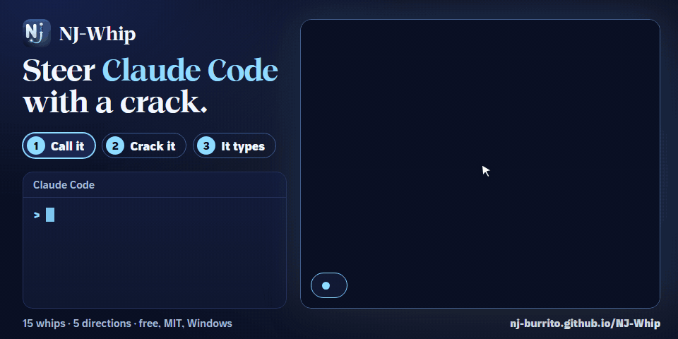

Steer Claude Code with a crack of the whip
NJ-Whip puts a whip on your mouse. Swing it and it cracks, then types one short, real instruction to Claude: take the shortest path, check the work, stay on the task.
Free and open source under the MIT licence. One exe, about 8 MB, no installer, no account. For Windows 10 (2004 or later) and Windows 11. Version 0.5.0.

What it does for your work
A crack is a short message to Claude.
Each of the 15 whips sends a real instruction in one of five directions.
-
Call it
Press Ctrl+Alt+Q and the whip is on your mouse. Press again and it drops away.
-
Crack it
Wind up one way, then snap back the other. You can also click, or press Ctrl+Alt+W.
-
It types for you
One message goes into the window you were in last: the whip's fun line, a real instruction, then Enter.
The five directions
| Direction | It asks Claude to | What it types, and how it is sent | Whips |
|---|---|---|---|
| Faster | Make the smallest change that works, with no detours, then stop and report. | Smallest change that works; no extra files, docs or refactors. When it's done and checked, stop and report.Queued, no Esc |
Classic, Cowboy, Pirate, Penguin |
| Harder | Run a real check before it says done, and show the output. | Before you say done, run a check that exercises the change and show the output; say what you couldn't run.Queued, no Esc |
Elephant, Drill Sergeant, Storm |
| Careful | Read each file and its callers before it changes anything. | Continue, carefully: read each file and its callers before you change it, state the change in two lines, then proceed.After Esc |
Zen, Chef, Vine |
| Happier | Work at a calm pace and say plainly when something fails. | Good progress, no rush. If something fails or can't be done, say so plainly with the output, then carry on.Queued, no Esc |
Cheerleader, Sauce |
| Focus | Stay on the task you asked for and keep side ideas for the end. | Continue only the task I asked for. When it's done and checked, stop and report; list ideas at the end.After Esc |
Neon, Ninja, Wizard |
- Queued, no Esc
- The text and Enter are sent. Claude reads the line at its next step, and nothing it is doing is cancelled.
- After Esc
- Esc is pressed first, so Claude stops before its next step. These lines begin with "Continue".
The lines above are the Plain pack in its Light wording. There are six packs, and the window shows them all.
The wording follows published guidance on steering Claude Code.
It has not been measured on live sessions, so this page gives no speed figure.
Try it here
Move your pointer over the screen below: the whip is in your hand.
Wind up one way, snap back the other, and it cracks. A click cracks too. On a phone, drag sideways to swing and tap to crack.
Every crack leaves the whip's landing mark, and it fades in 3 seconds: a puddle for Sauce, a bullet hole for Drill Sergeant, a cut across the screen for Ninja. Sauce also leaves a trail that fades in 3 seconds.
This is the app's own engine, compiled for the browser: the same whips, the same physics, the same crack detection.
Move here. Wind up one way, then snap back.
The live room did not start in this browser, so this is a still picture of it: the Sauce whip mid-swing with its trail.
15 whips, each with its own character
Hover a whip and it leans toward your pointer. Press it and it cracks with its own sound.
Each whip has its own look, tip, weight, crack effect, lines and combo shout. A heavy whip trails your hand. A light one answers at once.
The Sauce whip leaves a sauce trail that fades over 3 seconds. Pick Sauce in the room to see it.
Sound is off until you turn it on or press a whip.
A whip has its own crack sound where a licensed real recording was found. The others share five leather cracks.
Any whip can carry your own picture as its tip. The picture stays on your computer.
Keep cracking and the screen warms up
Heat meter. It fills in 4 cracks and drains about a second after the last one.
Full heat. The screen edges glow softly in the whip's own colour and style. The glow is never red, and the screen never shakes.
Streaks. Crack again in time and a combo label pops up, such as STOMP ×3.
The live demo did not start in this browser, so this is a still picture: the Neon whip at full heat, the edges glowing blue.
One small window
Everything is saved as you change it. The header and the footer stay in place while the content scrolls.
- Whip
- Pick one of the 15 whips. Picking one plays its sound.
- Message
- Choose an instruction pack and add your own lines.
- Hotkeys
- Change the keys that call the whip and crack it.
- Options
- The heat meter, the swing crack, and Start with Windows.
- About
- The version, and Check for updates.
Arabic interface. The layout stays the same. The words switch to Arabic and read right to left.
Update. NJ-Whip asks GitHub for the latest release only when you press Check for updates. It installs only when you confirm.
Reset Claude. A button types "normal mode", then "Continue.".
The six instruction packs
- Plain
- nj-kit
- Surgical
- Quiet
- Superpowers
- Plan-first


Light on your PC
NJ-Whip is built to be light, with older and low-spec PCs in mind.
It is one small exe, and the whip is drawn on the CPU.
| Memory, resting in the tray | about 20 MB working set |
|---|---|
| CPU, resting in the tray | about 0.5% of one core |
| Size of the exe | about 8 MB |
Privacy
No account. No telemetry. One network call, and only when you ask.
The only network call is the update check you start yourself, from the About tab.
Your settings live in one file on your computer:
%APPDATA%\NJ-Whip\config.tomlThis page has no analytics and loads nothing from other sites.
Get NJ-Whip
- Download NJ-Whip.exe.
- Run it. The window opens and the monogram appears in the tray.
- Flip the switch to On.
One exe, about 8 MB. No installer, no account. Windows 10 (2004 or later) and Windows 11. Version 0.5.0, written in Rust, free under the MIT licence.
Honest notes
The exe is not code-signed, so Windows SmartScreen may ask before the first run.
A crack types into whatever window you were in last, a code editor included.
This is an early release. Not every place you type to Claude (the VS Code panel, a terminal, the Claude desktop app, claude.ai/code) has been hand-tested yet.
NJ-Whip is an independent project. It is not affiliated with Anthropic.
Questions
Does it make Claude faster?
It sends an instruction that asks for the smallest change that works and no detours. The wording follows published guidance on steering Claude Code.
Its effect has not been measured on live sessions, so there is no speed figure to give.
Does a crack interrupt Claude?
Faster, Harder and Happier lines are queued without Esc, so nothing Claude is doing is cancelled.
Careful and Focus lines are sent after Esc, so Claude stops before its next step.
Where does it type?
Into whatever window you were in last. It is made for Claude Code wherever you type to it: the VS Code panel, a terminal, the Claude desktop app, or claude.ai/code.
Windows asks before it runs. Is that expected?
Yes. The exe is not code-signed, so SmartScreen may ask before the first run: choose "More info", then "Run anyway".
The source is open, and you can build the exe yourself.
Will it suit my older PC?
It is built to be light, and the measured numbers are in Light on your PC.
It has not been tested on an older PC yet. It needs Windows 10 (2004 or later) or Windows 11, and the settings window needs OpenGL.
How does it update?
Open the About tab and press Check for updates. NJ-Whip asks GitHub for the latest release only when you press that button.
It installs the update only when you confirm.
Can I change what it types?
Yes. Choose one of six instruction packs, add your own lines per whip, and change the keys a crack sends.
Does it work in Arabic?
The window has an Arabic interface. The messages a crack types to Claude are in English.
Is there a Mac or Linux version?
No. NJ-Whip is for Windows only.
Where do the sounds come from?
From recordings under the CC0 and CC BY licences, trimmed and loudness-normalised for NJ-Whip. The whoosh is made by the app itself.
The same list is in CREDITS.md.
More tools by NJ-Burrito
- NJ-Kit
A working method and skills for Claude Code. Every skill ends in a script that checks the work.
- QA-Wrap
A browser extension for testers: it records a test session, links each failure to the click behind it, and writes the bug report.
- Business-Wrap
Evidence in, one requirements document out, in Arabic and English.
- Profile-Wrap
Plans, writes and checks LinkedIn posts, and posts only after you tap Allow.
- Story-Wrap
A Claude Code toolkit for Arabic animated story reels.
- Portfolio
Nader Alzghoul, QA Automation Engineer in Amman, Jordan.